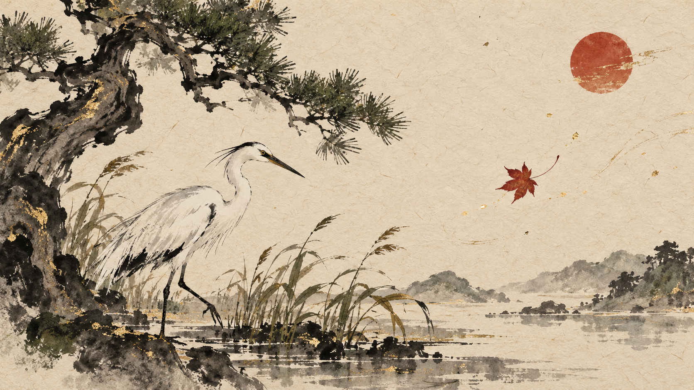

01 · item-scroll
STYLE SPECIMEN · Ōkami HD (2017 PC direction)
Brush of the Quiet Sun
Spare, lyrical, ink-led, and deliberate. These are editable primitives, not a finished screen.

02 · technique-selection
Brush technique mark
Brush technique mark
A simple authored gesture preview plus cost and equipped label; the mark never replaces text.
FICTIONAL SAMPLE · COST SHOWN BEFORE CONFIRM03 · field-journal
Journal seal
Journal seal
A dated discovery line with a red seal, short description, and completion label.
Specimen only; nothing has been committed.